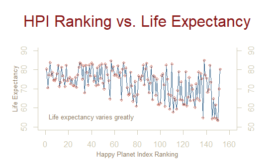
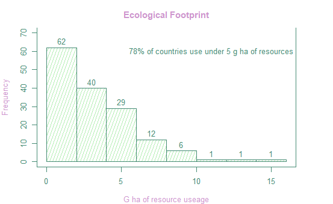
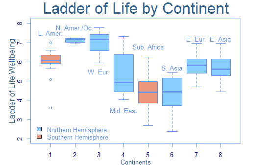
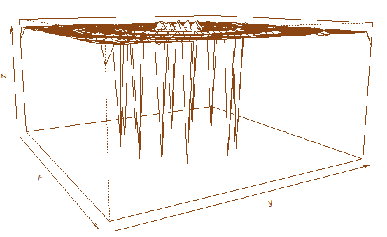
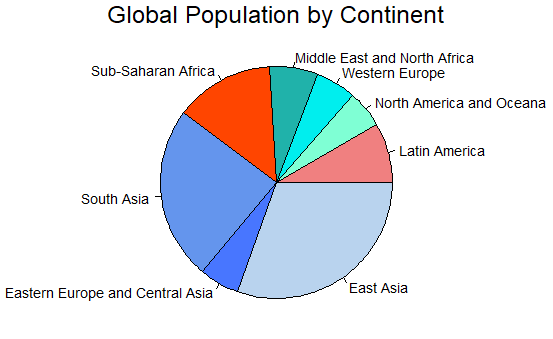

For this post, I am going through the data from the Happy Planet Index, and using some basic functions in R to visualize it.
This graph depicts the Happy Planet Index against life expectancy for each country:

This histogram depicts the ecological footprint of all countries:

This graph depicts a boxplot of nations’ Ladder of Life - Wellbeing score by continent:

This is a perspective plot:

The final graph is a pie chart showing the global population by continent:

The code used to produce these graphs is found below:
# plotting exercise using happy planet index data:
setwd("C:/Users/professionalClassic/Desktop/_fall2022/EPPS_6356/assign_02")
hpi <- read.csv("happyplanetindex.csv")
#renaming and adding data to our dataframe
hpi$Continent_num <- hpi$Continent
hpi["Continent"][hpi["Continent"] == 1] <- "Latin Amer."
hpi["Continent"][hpi["Continent"] == 2] <- "N. Amer./Oc."
hpi["Continent"][hpi["Continent"] == 3] <- "W. Europe"
hpi["Continent"][hpi["Continent"] == 4] <- "Mid. East"
hpi["Continent"][hpi["Continent"] == 5] <- "Sub-S. Africa"
hpi["Continent"][hpi["Continent"] == 6] <- "S. Asia"
hpi["Continent"][hpi["Continent"] == 7] <- "E. Europe/C. Asia"
hpi["Continent"][hpi["Continent"] == 8] <- "E. Asia"
hpi$Hemisphere <- hpi$Continent
hpi["Hemisphere"][hpi["Hemisphere"] == "Latin Amer."] <- "South"
hpi["Hemisphere"][hpi["Hemisphere"] == "N. Amer./Oc."] <- "North"
hpi["Hemisphere"][hpi["Hemisphere"] == "W. Europe"] <- "North"
hpi["Hemisphere"][hpi["Hemisphere"] == "Mid. East"] <- "North"
hpi["Hemisphere"][hpi["Hemisphere"] == "Sub-S. Africa"] <- "South"
hpi["Hemisphere"][hpi["Hemisphere"] == "S. Asia"] <- "North"
hpi["Hemisphere"][hpi["Hemisphere"] == "E. Europe/C. Asia"] <- "North"
hpi["Hemisphere"][hpi["Hemisphere"] == "E. Asia"] <- "North"
# line graph:
par(mar=c(4, 4, 5, 4))
plot.new()
plot.window(xlim=c(0, 160), ylim=c(50,90))
lines(hpi$HPI_rank, hpi$Life.Expectancy_years, col="steelblue4")
points(hpi$HPI_rank, hpi$Life.Expectancy_years, pch=5, col="coral3", cex=0.5)
par(col="cornsilk3", fg="cornsilk3", col.axis="cornsilk3")
axis(1, at=seq(0, 160, 20)) # What is the first number standing for?
axis(2, at=seq(50, 90, 10))
axis(4, at=seq(50, 90, 10))
box(bty="u")
par(col="navajowhite4")
mtext("Happy Planet Index Ranking", side=1, line=2, cex=0.8)
mtext("Life Expectancy", side=2, line=2, las=0, cex=0.8)
mtext("HPI Ranking vs. Life Expectancy", side=3, line=2, cex=2, col="firebrick4")
text(x=40, y=55, "Life expectancy varies greatly", cex=0.8)
# Histogram
par(mar=c(4, 4, 3, 4), fg="aquamarine4", cex=0.8,
col.axis="aquamarine4", bg="white", col.lab="plum3", col.main="plum3"
)
hist(hpi$Ecological_Footprint_gha, ylim=c(0, 70),freq=TRUE, density=20,
angle=70, col="darkseagreen2",
border="aquamarine4", main="Ecological Footprint", xlab="G ha of resource useage",
labels=TRUE)
box(bty="u")
text(11, 60, "78% of countries use under 5 g ha of resources")
#boxplot
par(mar=c(3, 4.1, 2.5, 4), fg="cornflowerblue", col.axis="navyblue")
boxplot(Ladder_of_life_Wellbeing ~ Continent_num, data = hpi,
xlab="", col=c("darksalmon", "lightskyblue", "lightskyblue",
"lightskyblue", "darksalmon", "lightskyblue",
"lightskyblue", "lightskyblue"),
ylab="", ylim=c(2,8))
mtext("Continents", side=1, line=2, cex=0.8, col="steelblue4")
mtext("Ladder of Life Wellbeing", side=2, line=2, col="steelblue4")
mtext("Ladder of Life by Continent", side=3, line=.5, cex=2,
col="steelblue4")
text(1, 7.5, "L. Amer.")
text(2, 7.8, "N. Amer./Oc.")
text(3, 5.5, "W. Eur.")
text(4, 3.5, "Mid. East")
text(5, 6.8, "Sub. Africa")
text(6, 5.7, "S. Asia")
text(7, 7.2, "E. Eur.")
text(8, 7.2, "E. Asia")
legend(0.2, 2.9, c("Northern Hemisphere", "Southern Hemisphere"),
fill = c("lightskyblue", "darksalmon"),
bty="n")
# Persp (source: https://github.com/datageneration/datavisualization/blob/master/R/murrell01.R)
x <- seq(-10, 10, length= 40)
y <- x
f <- function(x,y) { r <- sqrt(x^2+y^2); 10 * tan(r)/(0.2*r)}
z <- outer(x, y, f)
z[is.na(z)] <- 1
# 0.5 to include z axis label
par(mar=c(0, 0.5, 0, 0), lwd=0.5)
persp(x, y, z, theta = 60, phi = 10,
expand = 0.5)
# Pie Chart
par(mar=c(0, 2, 1.5, 2), xpd=TRUE, cex=0.9)
cont.pop <- c(with(hpi, sum(Population_thousands[Continent_num == 1])),
with(hpi, sum(Population_thousands[Continent_num == 2])),
with(hpi, sum(Population_thousands[Continent_num == 3])),
with(hpi, sum(Population_thousands[Continent_num == 4])),
with(hpi, sum(Population_thousands[Continent_num == 5])),
with(hpi, sum(Population_thousands[Continent_num == 6])),
with(hpi, sum(Population_thousands[Continent_num == 7])),
with(hpi, sum(Population_thousands[Continent_num == 8])))
names(cont.pop) <- c("Latin America", "North America and Oceana",
"Western Europe", "Middle East and North Africa",
"Sub-Saharan Africa", "South Asia",
"Eastern Europe and Central Asia", "East Asia")
pie(cont.pop, col = c("lightcoral","aquamarine", "cyan2", "lightseagreen",
"orangered1","cornflowerblue", "royalblue1",
"slategray2"))
mtext("Global Population by Continent", cex = 1.5, )Thank you for visiting!